的平行于水平平面的平面切下一部分，使得球的剩余部分的体积是原来球体体积的百分之 。 是多少？解这个三次方程就可以得到答案：
的平行于水平平面的平面切下一部分，使得球的剩余部分的体积是原来球体体积的百分之 。 是多少？解这个三次方程就可以得到答案：众所周知，“代数”一词源自阿拉伯语。在我看来，这多少有点儿不公平，我稍后会讲原因。到底公平与否，我们还需要听听历史学家的解释。
※※※
假设我给出的丢番图生活的年代（约 200—284）是准确的，那么他所处的时代是一个非常不幸的时代。当时的古埃及是罗马帝国的一个省，古罗马正处于衰亡时期，也就是爱德华·吉本（1737—1794）在《罗马帝国衰亡史》中花费大量笔墨描述的那段时期。那本书中的第 7 章详细描述了那个时代（如果丢番图生活在那个时代）的悲惨状况。
罗马帝国在 3 世纪后期有所恢复。戴克里先（284～305 年在位）和君士坦丁（306～337 年在位）是两位伟大的古罗马皇帝。君士坦丁的母亲据传是一位基督教徒，他发布了米兰敕令（313 年），宣告了基督教的合法化，并在临终时接受了基督教洗礼。
从起初对基督教的宽容到随后强制推行基督教的决策，都无法阻止罗马帝国的衰亡。在某种程度上说，这也许加速了罗马帝国衰亡的进程。早期基督教最大的优点之一是它面向所有阶层。然而，为了做到这一点，它必须使用吸引人但复杂的形而上学理论来“收买”世故的城市知识分子，同时利用简明而直白的救世和神权的信条来维持对大众的控制，并利用五花八门的传闻或者对某些根深蒂固的异教信仰做出让步来加强控制。不过，大众仍然会通过各种途径察觉到对这些高深的形而上学理论的争论，并利用它们发泄对社会或种族不满的情绪。
丢番图居住的亚历山大城就是这个过程的很好的例证。即便在经过希腊 300 年的统治和后来罗马 300 年的统治之后，亚历山大城仍然是一块华丽辉煌的海外飞地，人们的衣食来自没受过教育的说科普特语的古埃及农民居住的荒郊地区。对于居于沙漠边缘的信仰基督教的科普特人来说，“希腊”“罗马”和“异教徒”几乎是近义词，而缪斯神庙与其经久不衰的学术传统和附属的大图书馆，似乎就是撒旦的家。
狂热的宗教信仰使古埃及的情况变得更加糟糕。在亚历山大城，这种情况更甚，这里有几千名精力旺盛的年轻男性，供那些想煽动宗教暴徒的人差遣。野心勃勃的政治家经常会这么做。在当时的古罗马，这些政治家还包括教会职员。这就是公元 415 年希帕提娅被谋杀的背景，这件事让爱德华·吉本怒不可遏。
希帕提娅是数学史上第一位女性数学家。她的所有著作都丢失了，我们只能通过传说来了解她。从这点来说，我们很难判断她是否是一位重要的数学家。但无论如何，她肯定是一位重要的学者。她在缪斯神庙授课（她的父亲塞昂是神庙的最后一任馆长），既是教材的编者、编辑，也是教材的保存者，其中就有数学教材。她教授新柏拉图主义哲学 1，也是该学派的拥护者。这种哲学试图确立在后罗马时代非常缺乏的秩序、正义和和平。据说她非常美丽，而且终生未婚。
1新柏拉图主义的创始人普罗提诺是另一位亚历山大人，他很有可能是丢番图的同代人。伯特兰·罗素曾说：“在那些世俗意义上不幸、却决心要在理论世界中寻求一种更高级的幸福的人们中间，普罗提诺占有极高的地位。”新柏拉图主义认为数学至高无上，柏拉图和原始柏拉图学派也都这样认为。后来的一位新柏拉图主义哲学家马里纳斯评论说：“我希望一切都是数学。”
希帕提娅在教学和学术研究方面非常活跃。当时亚历山大城的教长是西里尔，后来被称为圣西里尔，由于时代久远而且神学争论非常复杂，我们很难断定他到底是一个什么样的人。正如我们从《天主教百科全书》中了解到的那样，当时的亚历山大城总是处于“暴乱”之中。总之，西里尔卷入了与驻埃及的罗马行政长官奥列斯特之间的一场教会与国家的争端当中，有人散布谣言说希帕提娅是和解的主要障碍。一群暴徒被煽动起来（也许是自行发起暴动），他们把希帕提娅拖下车，穿过街道拖进教堂，据文献记载及其译文描述，她被用贝壳或者陶瓷碎片凌迟处死。2
2吉本在《罗马帝国衰亡史》第 47 章写道：“凶手用这种方式是否要让受害人活着受罪，这点我不知道。”因《水孩子》一书而闻名的查尔斯·金斯莱（1819—1875）写了一部关于希帕提娅的小说，在这部小说中，当暴徒用牡蛎贝壳将希帕提娅的肉从骨头上刮下来之后，她仍然活着。这部小说和查尔斯·威廉·米契尔受到其启发所作的画一样，完全是夸张的维多利亚风格。
希帕提娅似乎是最后一个在缪斯神殿授课的人，人们认为她在 415 年的骇人听闻的死亡标志着古代欧洲数学的终结。之后，西罗马帝国勉强支撑了 60 年，亚历山大城在东罗马帝国（拜占庭帝国）各代皇帝的统治下又延续了 164 年（其间被波斯 3 短暂占领，时间为 616 ～ 629 年），但其学术生机已经荡然无存。代数学历史的长河中的下一位著名人物的家乡在亚历山大城以东 900 英里 4 的底格里斯河沿岸，又回到了美索不达米亚平原，2500 年前，那里正是一切故事的开端。
3本书中，我使用“波斯人”泛指现在讲印欧语系语言的伊朗人和南部中亚人（不包括亚美尼亚人）。这里实在没有合适的词来代指这个群体，“雅利安人”是贬义词，会令人不悦；“伊朗人”指现代的伊朗公民，而不是指说印欧语系语言的一些人。很多人不喜欢自己被称为“波斯人”，在不同的历史背景下，这个词容易引起混乱。词穷的我只能尽力。
41 英里约为 1.609 千米。——译者注
※※※
公元 5 世纪，罗马帝国北部和西部的领土被日耳曼人攻占；南部和东部的领土中除了希腊、安纳托利亚及意大利和巴尔干半岛南部部分领土之外，都在 7 世纪被功陷。亚历山大城也于公元 640 年 12 月 23 日沦陷，这伤透了拜占庭皇帝赫拉克利乌斯的心 5，他一生致力于收复 7 世纪初被波斯人侵占的领土。
5赫拉克利乌斯在 50 天后死亡，吉本说其“死因是水肿”。
亚历山大城真正的征服者是阿姆鲁·伊本·阿斯（约 585—664）6。亚历山大城发生了一场战斗，围攻持续了 14 个月，而古埃及的大部分地区被轻松拿下。当时的古埃及人自摆脱了波斯人的奴役之后，却受到拜占庭皇帝赫拉克利乌斯残酷的迫害。其结果是埃及本土人开始憎恨拜占庭人，并乐于有位更宽容的统治者来取代目前这个残酷的统治者。
6在吉本的书中，他的名字是“Amrou”。
英文的“代数”一词“algebra”取自一本书的书名，那本书就是在 820 年左右阿拔斯王朝的巴格达写成的，作者的名字是穆罕默德·本·穆萨·阿尔·花剌子模（Abu Ja'far Muhammad ibn Musa al - Khwarizmi）。我将像大家一样称他为花拉子密。7
7其全名的意思是“贾法尔的父亲，穆罕默德，穆萨的儿子，来自花剌子模”。花剌子模（Khwarizm）是古代的一个国家，位于今天的乌兹别克斯坦。顺便提一下，以“al - ”开头的阿拉伯名字总以它们的第二部分编入索引和目录。例如“al - Khwarizmi”在《科学传记大辞典》中以 K 索引，而不以 A 索引。
※※※
巴格达曾经是一个伟大的文化中心（约 786 ～ 833 年），现代西方人只模糊地知道这里是《一千零一夜》故事中所描绘的有元老、奴隶、商队和远行商人的世界。阿拉伯人自己认为那时的巴格达正处于黄金时代，尽管事实上阿拔斯王朝已经不具备强大的军事力量来维持当初赢占的领土，而且正在因北非和高加索等地区的叛乱而进一步失去领土。
波斯是阿拔斯王朝领土的一部分，信仰和世俗权力两方面都受到统治者的控制。然而，从 1400 年前的米底王国开始，波斯就已经有了高度文明，而公元 800 年的阿拉伯人与他们在沙漠居住的祖先只隔了六代。因此，在某种程度上，阿拔斯人对波斯人怀有某种文化上的自卑情结，就像古罗马人对古希腊人一样。
除了波斯人之外，还有古印度人。公元 4 世纪和 5 世纪，古印度北部统一在笈多王朝之下，但此后又渐渐分成小国，这种情况一直持续到土耳其列强在 10 世纪末的入侵。中世纪的印度文明对数特别着迷，尤其是一些非常大的数，他们还特意给这些数起了名字（你也许曾经看到过梵文术语“tallakchana”，它代表 ）。数字 0 的发现——这个不朽的荣耀——属于古印度人，也许归功于数学家婆罗摩笈多（598—670），而我们所说的阿拉伯数字实际上也起源于古印度。
除了古印度人之外，当然还有中国人。至少从 7 世纪中叶开始，中国佛教高僧唐玄奘西行，印度由此开始与中国保持文化往来，波斯经由丝绸之路与中国进行频繁的贸易往来。中国很早就有了自己的数学文化，我将在第 9 章介绍。
因此，有闲情逸致的巴格达人熟悉当时文明世界中发生的任何事情。他们通过亚历山大城以及他们与拜占庭帝国之间的贸易往来了解到古希腊文化和古罗马文化，他们也能够容易地接触到波斯、古印度和古代中国的文化。
要使阿拔斯王朝的巴格达成为一个理想的保存丰富知识的中心，所需要的就是一所学院，一个能够查阅书面文献、举办演讲和学术会议的地方。不久，这样的学院就出现了，人们称它为智慧宫（Dar al-Hikma）。这所学院最鼎盛的时期是阿拔斯王朝第七任统治者马蒙统治的时期。用亨利·罗林森爵士的话说，马蒙统治时期的巴格达“在文学、艺术和科学等领域同科尔多瓦一样达到世界最高水平，而在商业和财富方面则远远超过了科尔多瓦”。这就是花拉子密生活和工作的时期。
※※※
我们对花拉子密的生平了解得很少，对他的生卒年份（约 783—850）也只知大概。在阿拉伯历史学家和目录学家的著作中，关于花拉子密有一些枯燥的零碎记录，如果你想对他了解得更详细，我建议你参考《科学传记大辞典》。我们只知道花拉子密编写了几部著作：一部是关于天文学的，一部是关于地理学的，一部是关于犹太历法的，一部是关于古印度数字体系的，还有一部是编年史。
这部关于古印度数字体系的著作只有拉丁文译本保存了下来，它的卷首语是“根据花拉子密……”（Dixit Algorithmi...）。这部著作叙述了现代十进制算术体系的计算法则，这些法则是古印度人发明的，它的影响非常深远。因为这段卷首语，掌握了这种“新算术”（相对于旧罗马数字体系，后者对运算毫无帮助）的中世纪欧洲学者称自己为“算术家”（algorithmists）。很久之后，人们用“算法”（algorithm）这个词来表示经过有限次确定步骤后可以完成的计算过程。这是现代数学家和计算机科学家使用的含义。
真正吸引我们的是一本名为《还原与对消计算概要》的书。这是一本代数和算术教材，是 600 年前丢番图的《算术》之后在这个领域中第一部意义重大的著作。此书分为三部分，分别关于二次方程的解法、面积和体积的测量以及处理复杂的继承法所需要的数学。
严格地说，这三部分中只有第一部分属于代数，这有些令人失望。而且花拉子密没有字母符号体系，因此他既没有用字母和数表示方程的方法，也没有表示未知量和未知量的幂的符号。对于我们写成如下形式的方程
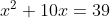
丢番图会把它写成
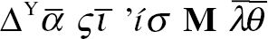
而它在花拉子密的书中的形式如下：
一个平方与 10 个该平方的根之和等于 39 迪拉姆，也就是说，当一个平方加上它的根的 10 倍后总和等于 39 时，这个平方是什么？
（迪拉姆是一种货币单位。花拉子密用它表示我们现在所说的常数项。）
另外，在花拉子密的著作中，我们没有看到丢番图从几何方法向符号运算的历史性转变。这并不奇怪，因为花拉子密没有要处理的符号，但这与 600 年前丢番图取得的伟大突破相比稍有一些倒退。范德瓦尔登说：“我们可以排除花拉子密的工作深受古希腊数学影响的可能性。”
事实上，花拉子密的主要代数成就是提出了把方程作为研究对象的想法，他将所有包含一个未知量的一次方程和二次方程分类，并给出操作它们的法则。他把这些方程分成 6 种基本类型，用现代字母符号体系把它们写出来就是
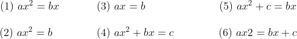
其中某些方程在我们看来显然属于同一类型，那是因为我们有负数的概念，而花拉子密没有这样的知识。当然他可能会提到减法，提到一个量比另一个量多，或者一个量比另一个量少，但是，他的自然的算术意识是用正数来看待一切。
至于操作技巧，就是引入了“还原”（al-jabr）和“对消”（al-muqabala）。一旦碰到类似
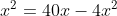
的方程（或者如花拉子密所说：“一个平方比四十个该平方的根少四个平方。”），你如何把这个方程转化成 6 种基本方程类型中的一种呢？将这个方程的两边加上
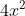
，“还原”这个方程，就得到第一种类型的方程：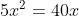
这就是在方程两边加上相等的项。相反的做法是将方程两边减去相等的项，即“对消”。例如，在方程两边同时减去 29 可以把方程
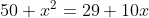
转化成第五种类型
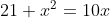
※※※
这些操作方法都不是新的。事实上，还原和对消的方法在丢番图的书中就出现过，当然，丢番图的书中有丰富的字母符号体系来帮助处理方程问题。图默在《科学传记大辞典》中说：“花拉子密的科学成就其实很普通，但是其影响是巨大的。”
事实上，我担心此刻的读者会产生这样的想法：这些古代和中世纪的代数学家“不是很聪明”。公元前 1800 年的古巴比伦人就已经在求解写成文字问题的二次方程，而 2600 年之后的花拉子密仍在求解写成文字问题的二次方程。
我承认这的确有点儿令人失望。然而，从某种程度上说这也是令人振奋的。形成符号代数的进展极其缓慢，说明这个课题处于非常高级的层次。借用约翰逊博士的比喻，其奇妙之处不在于人们花了如此长的时间才学会做这些事情，而在于人们能做到这些事情。
事实上，代数学的发展到了中世纪 8 中期才开始出现一点起色。在花拉子密之后，阿拉伯地区涌现了许多著名的数学家。塔比·伊本·库拉（836—901）就是花拉子密的后一代人，他也生活在巴格达，在天文数学和数论方面做出了杰出的工作。一个半世纪之后，西班牙的科尔多瓦的穆罕默德·贾扬尼（989—1079）写了第一篇关于球面三角学的论文。然而，他们都没有在代数学上取得重大进展。特别是，没有人尝试去重复丢番图在字母符号体系领域的伟大突破，所有人都在使用文字表述他们的问题。
8中世纪开始于公元 476 年 9 月 4 日，星期六，当时的最后一位西罗马皇帝被蛮族人奥多亚塞废黜。中世纪结束于 1453 年 5 月 29 日，星期二，那天君士坦丁堡失陷，东罗马帝国灭亡。如果这些日期准确，中世纪精确的中间点是公元 965 年 1 月 15 日星期日的午夜。
下面，我将详细介绍另一位中世纪的数学家，不仅因为他值得介绍，而且他还是通往文艺复兴初期欧洲的桥梁，代数学的发展直到文艺复兴时期才真正开始好转。
※※※
奥马·海亚姆（约 1048—1131）作为《鲁拜集》的作者闻名于西方。这是一本四行诗诗集，展示了极具个性的人生观，内容多是感慨生命无常，应及时行乐、纵酒放歌，其风格在某种程度上与英国诗人豪斯曼（1859—1936）的作品类似。爱德华·菲茨杰拉德（1809—1883）把其中的 75 首诗翻译成英语四行诗，每一首诗的押韵方式都是“a-a-b-a”。菲茨杰拉德翻译的海亚姆的《鲁拜集》于 1859 年出版，在第一次世界大战前的英语国家里非常受欢迎。（一本用华美珠宝装饰的《鲁拜集》原版复本同泰坦尼克号一起沉入了大海。）
《科学传记大辞典》认为海亚姆生活的年代最有可能是 1048～1131 年。因为没有更准确的日期，所以我只好同意这种观点。这样的话，海亚姆至少比花拉子密晚 250 年。在考察中世纪的智力活动时，我们一定要牢记这些巨大的时间跨度。
海亚姆生活和工作的地方位于第一次大征服的最东边。这一地区包括美索不达米亚、现在的伊朗北部和中亚的南部（今天的土库曼斯坦、乌兹别克斯坦、塔吉克斯坦和阿富汗）。在海亚姆的时代，这里既有民族冲突也有宗教冲突，涉及的主要民族有波斯人、阿拉伯人和土耳其人。
在 1037 年，也就是在海亚姆出生的几年前，一位名叫塞尔柱的伽色尼土耳其雇佣兵造反并打败了伽色尼军队。这个新建立的土耳其政权迅速扩张。1055 年，当时海亚姆 7 岁，塞尔柱的孙子接管巴格达，并自封为苏丹，意思就是“统治者”。
※※※
因此，海亚姆的一生都在塞尔柱土耳其的统治之下度过，他的重要赞助人是塞尔柱帝国的第三位苏丹马立克沙（1055—1092）9。马立克沙的统治时期是 1073~1092 年，首都是今天伊朗境内的伊斯法罕市，位于伊拉克巴格达以东约 700 千米。马立克沙没有他的维齐尔（相当于宰相）尼扎姆·穆勒克（1018—1092）有名，穆勒克是历史上有名的治国之才，也是一位外交天才，他同海亚姆一样，是波斯人。马立克沙、穆勒克经常与哈桑·萨巴赫（1050—1124）并称为当时的“波斯三巨头”，是塞尔柱帝国的三名重要人物。
9马立克沙（Malik Shah）的名字传递了一些关于塞尔柱帝国的民族平衡的信息。“Malik”和“Shah”分别是“国王”的阿拉伯文和波斯文。当然，马立克沙实际上是土耳其人，是三个民族的混血儿。
在宗教方面，马立克沙宫廷似乎很有包容心，这就是中世纪的大致情况。这也许非常适合海亚姆。他的诗表现出一种怀疑论和不可知论的人生态度，与他同时代的人通常认为他是一名自由思想家。作为伊斯法罕大天文台的台长，海亚姆主要忙于研究和学习，尽量不参与麻烦的事情，只是按要求编写正统宗教手册或履行每个信徒的义务。我们可以从现存的这些诗和传记看出，海亚姆给现代读者留下了非常深刻的印象。
作为代数学家，他的主要成果是他在二十多岁时去伊斯法罕之前写的一本书，书名是《还原与对消问题的论证》。
同花拉子密和中世纪的其他阿拉伯数学家们一样，海亚姆忽视了或者不知道丢番图在字母符号体系方面的伟大突破，而是用文字阐述每一个问题。另外，他也像古希腊人一样使用了强大的几何方法，在求解数值问题时很自然地转向几何方法。
海亚姆对代数学发展的主要贡献在于他首先开始严肃地研究三次方程。由于缺少适当的字母符号体系，而且海亚姆很明显不愿意接纳负数，因此他的研究显得很费力。比如，我们书写的方程
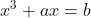
，海亚姆将其表述为“一个立方加上若干边等于一个数”。不过他仍然提出并解决了几个涉及三次方程的问题，只是他的解法都是几何方法。这并不是三次方程在历史上第一次出现。我们已经看到，丢番图解决过一些三次方程；甚至在丢番图之前，阿基米德在考虑如何把一个球分成两部分，使得它们的体积之比是给定的比例等类似问题 10 时，也遇到了三次方程。（你如果稍微想一想，就会想到这与阿基米德对浮体的兴趣有关。）海亚姆似乎是第一个把三次方程分成不同类型的人，他把三次方程分成 14 种类型，他知道如何使用几何方法处理其中的 4 种类型。
10利用现代术语描述这个问题：假设一个水平平面上有一个直径为 的球，其顶部被一个高度为 的平行于水平平面的平面切下一部分，使得球的剩余部分的体积是原来球体体积的百分之 。 是多少？解这个三次方程就可以得到答案：
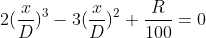
。例如，如果 是 50，那么显然 等于 的一半（即 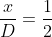
），因为有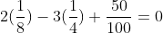
。下面是海亚姆考虑的一个三次方程的例子：
画一个直角三角形。从直角所在的顶点作斜边上的垂线段。如果这条垂线段的长度加上这个直角三角形最短边的长度等于斜边的长度，你能知道这个直角三角形的形状吗？
答案是这个三角形的最短直角边与另一条直角边的比必须满足下面的三次方程
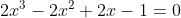
这个比值完全决定了这个直角三角形的形状。
这个方程唯一的实数解是 0.647 798 871...，这个无理数非常接近有理数
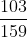
。所以，直角边是 103 和 159 的直角三角形非常接近这个问题的答案，读者可以轻松验证 11。海亚姆采用了一种间接的方法，求解一个略微不同的三次方程，利用两条经典的几何曲线的交点给出了这个方程的数值解。11根据勾股定理，直角边为 103 和 159 的直角三角形的斜边长为
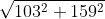
，这个值是 189.446 562 386 33...，而垂线段的长度是 86.446 540 880 49...，所以，如果把这个数加上 103，你就能得到斜边长的近似值。※※※
我来简短地总结一下截止到本章的事件。
在介绍海亚姆时，我提到了可怕的曼齐刻尔特战役，随后就是东正教的大撤退，以及之后奇怪、混乱且一直存在争议的反攻。在这段时间里（即海亚姆生活的年代），西欧文化在黑暗时代之后的困境中崛起。希望之光首先在意大利燃起，同时也最为明亮。也正是在这里，我们遇到了下一批代数学家。